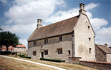

![]()
Сэр Исаа́к Нью́то́н[K 1] (англ. Isaac Newton /ˈnjuːtən/, 25 декабря 1642 года — 20 марта 1727 года по юлианскому календарю, действовавшему в Англии до 1752 года; или 4 января 1643 года — 31 марта 1727 года по григорианскому календарю) — английский физик, математик, механик и астроном, один из создателей классической физики. Автор фундаментального труда «Математические начала натуральной философии», в котором он изложил закон всемирного тяготения и три закона механики, ставшие основой классической механики. Разработал дифференциальное и интегральное исчисления, теорию цвета, заложил основы современной физической оптики, создал многие другие математические и физические теории. Член (1672) и президент (1703—1727) Лондонского королевского общества[11].

Исаак Ньютон родился в деревне Вулсторп (англ. Woolsthorpe, графство Линкольншир) в канун гражданской войны. Отец Ньютона, мелкий, но преуспевающий фермер Исаак Ньютон (1606—1642), не дожил до рождения сына. Мальчик родился преждевременно, был болезненным, поэтому его долго не решались крестить[12]. И всё же он выжил, был крещён (1 января[K 2]), и назван Исааком в память об отце. Факт рождения под Рождество Ньютон считал особым знаком судьбы[13]. Несмотря на слабое здоровье в младенчестве, он прожил 84 года. Ньютон искренне считал, что его род восходит к шотландским дворянам XV века, однако историки обнаружили, что в 1524 году его предки были бедными крестьянами[14]. К концу XVI века семья разбогатела и перешла в разряд йоменов (землевладельцев). Отец Ньютона оставил в наследство крупную по тем временам сумму в 500 фунтов стерлингов и несколько сот акров плодородной земли, занятой полями и лесами[13].
Отчим умер в 1653 году, часть его наследства перешла к матери Ньютона и была сразу же оформлена ею на Исаака. Мать вернулась домой, однако основное внимание уделяла троим младшим детям и обширному хозяйству; Исаак по-прежнему был предоставлен сам себе.